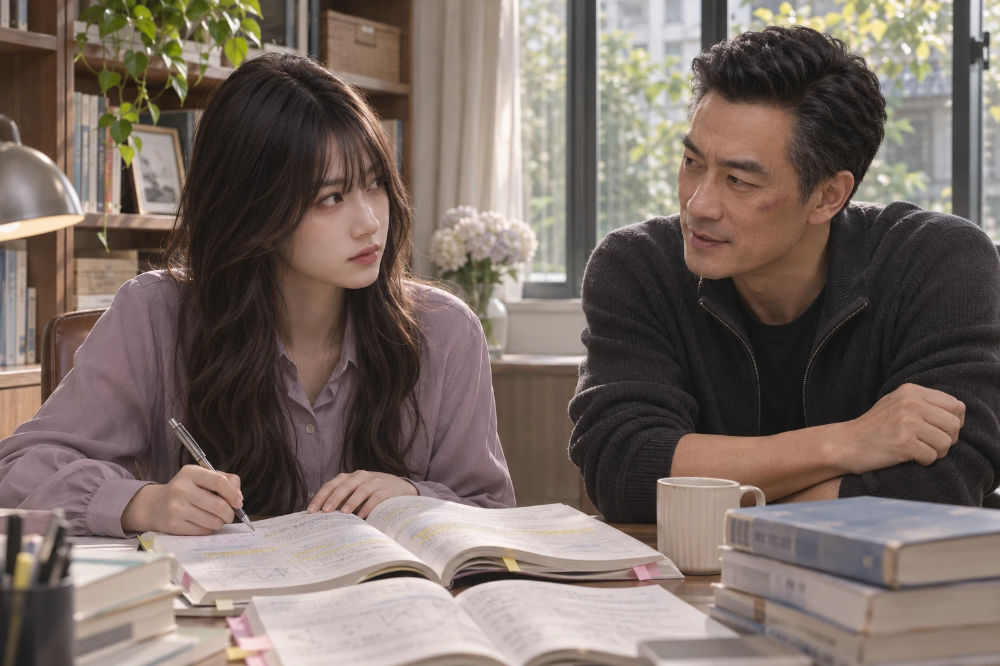
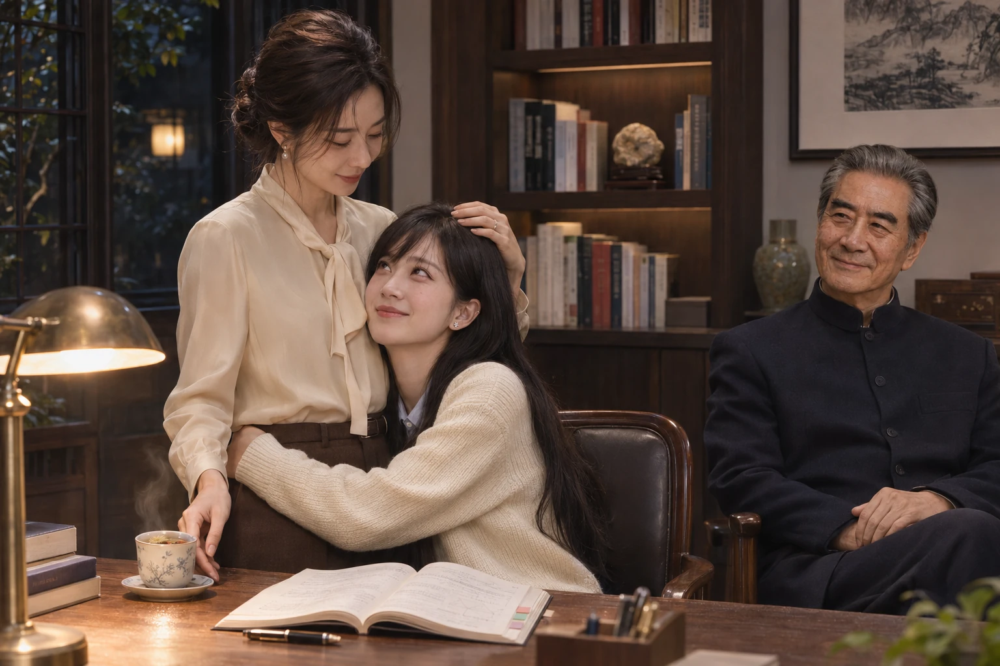
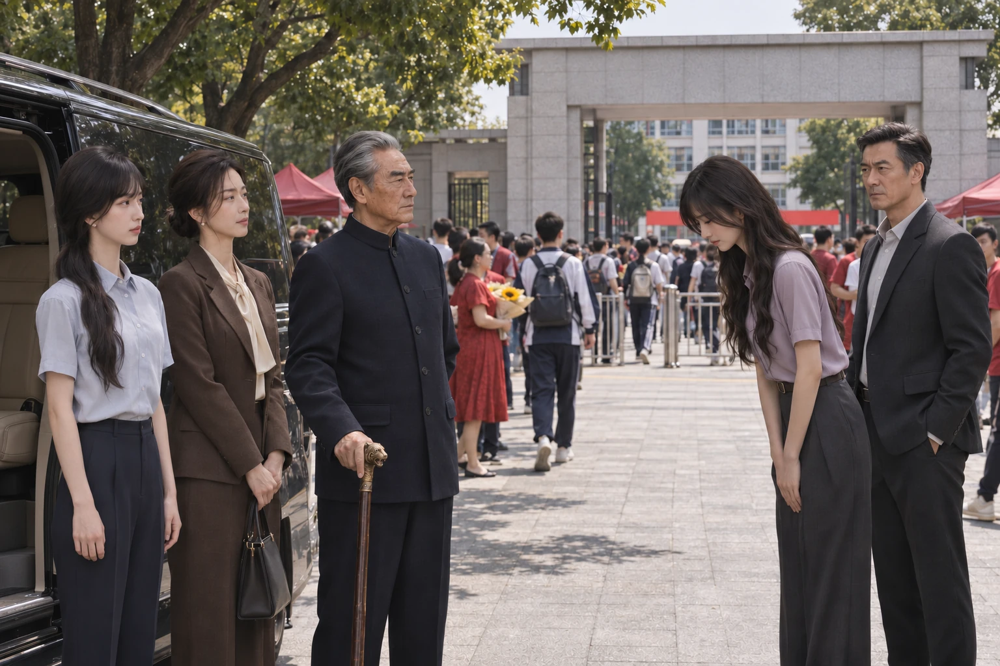
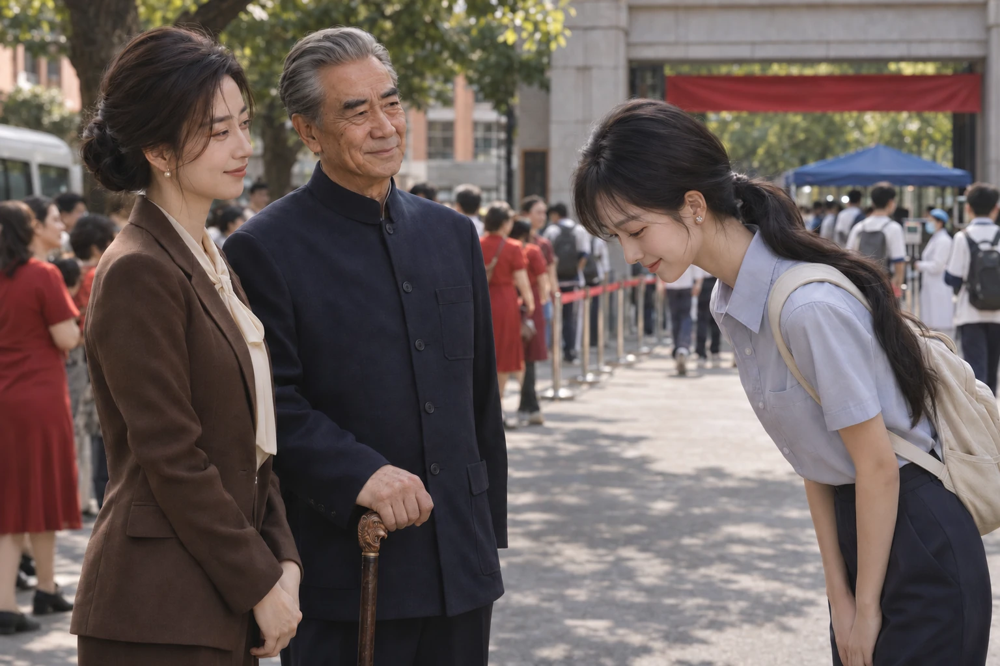

ตอนที่ 08
หยัดยืน
ซ่งเหวินพักฟื้นสามวันเต็ม กระทั่งความร้าวระบมตรงบาดแผลตามร่างกายจะทุเลาลง ระหว่างนั้นเขาให้กำลังใจลูกสาว เพราะใกล้สอบเกาเข่าเต็มที ซ่งหว่านจึงตั้งใจอ่านหนังสือ ถึงอย่างนั้นเธอยังดูแลผู้เป็นพ่ออย่างใกล้ชิด
“หว่านเอ๋อร์ พักบ้างก็ได้นะลูก อย่ากดดันตัวเองเกินไป” เห็นเธออ่านหนังสือเตรียมสอบอย่างขะมักเขม้น จึงกังวลว่าเธอจะเครียดและกดดันตัวเองจนส่งผลเสียกับการสอบ
ปกติแล้วลูกสาวเขาเป็นที่หนึ่งของสายชั้นมาตลอด ตอนสอบปลายภาคครั้งล่าสุดเธอก็ยังคงรักษาอันดับหนึ่งไว้ได้อย่างเหนียวแน่น เขาจึงมั่นใจว่าเธอจะได้เข้าไปศึกษาต่อในมหาวิทยาลัยชั้นนำของประเทศแน่นอน
ซึ่งเมื่อเทียบกันแล้ว แม้ซ่งอวิ๋นจะเรียนเก่งไม่แพ้พี่สาว แต่เขากลับรู้สึกภูมิใจในตัวซ่งหว่านมากกว่า เนื่องจากซ่งหว่านเติบโตมาโดยใช้เวลาส่วนมากอยู่กับฮวาผิงเพียงแค่สองคน เธอไม่ได้มีพร้อมและรายล้อมไปด้วยความอบอุ่นเหมือนซ่งอวิ๋น พอเห็นลูกสาวคนโตเป็นเด็กดีและมีคุณภาพขนาดนี้ เขายิ่งรู้สึกขอบคุณหญิงอันเป็นที่รักมากขึ้น
“หนูไม่ได้กดดันตัวเองเลยค่ะคุณพ่อ อ่านหนังสือก่อนสอบน่าตื่นเต้นจะตายไป ตอนทำข้อสอบสมองหนูจะเห็นภาพเนื้อหาในหนังสือทั้งหมด หนูเลยชอบมาก” หญิงสาวยิ้มตาหยี แววตาเต็มไปด้วยความมีชีวิตชีวา
“ลูกจำเป็นภาพสินะ ต่างจากคนอื่นที่จำเป็นเสียง หรือต้องเขียนถึงจะจำได้”
“น่าจะเป็นแบบนั้นมั้งคะ หนูก็ไม่แน่ใจเหมือนกัน คุณพ่อยังเจ็บแผลอยู่หรือเปล่าคะ” เธอเลื่อนสายตาสำรวจรอยช้ำตามร่างกายผู้เป็นพ่อ
“ดีขึ้นมากแล้วล่ะ วันสอบพ่อจะไปรออยู่ข้างสนามสอบนะ”

“หนูว่าคุณพ่อควรไปเชียร์น้องรองมากกว่านะคะ ตอนนี้น้องน่าจะเสียใจมาก หนูกลัวว่ามันจะกระทบกับการสอบ” ใบหน้ารูปไข่ฉายแวววิตกกังวล
“ไม่ต้องกังวลมากเกินไป อาอวิ๋นไม่ต้องการพ่อหรอก ที่สำคัญแม่ของลูกไม่อยู่แล้ว พ่อรับปากอาผิงไว้แล้วว่าจะดูแลให้ดีที่สุด พ่อจะไม่ผิดสัญญาเด็ดขาด”
“แค่พ่อยอมพาหนูเข้าบ้านซ่ง จนมีปัญหากับคุณปู่เพื่อหนู ก็ถือว่าพ่อทำดีที่สุดแล้วค่ะ ขอบคุณแล้วก็ขอโทษนะคะ”
“ลูกขอโทษมานับครั้งไม่ถ้วนแล้ว ไม่ต้องรู้สึกผิดหรอก ถึงตอนนี้ปู่ของลูกจะใจแข็ง แต่ท่านเมตตาลูกหลานเสมอ ผ่านเวลาไปสักพักเดี๋ยวก็ใจอ่อน” ซ่งเหวินยังมีหวัง เพราะตอนนี้พ่อไม่ได้ตัดขาดกับเขาโดยสมบูรณ์ แม้จะยึดตำแหน่งคืน แต่หุ้นและทรัพย์สินที่ท่านเคยให้ไว้ก็ยังไม่หายไปไหน
ดังนั้นเขาต้องใจเย็น แล้วค่อย ๆ ทำให้พ่อเห็นว่าหลานสาวอีกคนของท่านก็มีดีไม่ต่างกัน เผลอ ๆ อาจดีกว่าเสี่ยวอวิ๋นเสียอีก เพราะซ่งหว่านสุขุม ใจเย็นและมีเหตุผลมากกว่า
ซ่งหว่าน “…”
ไม่จริงเลย ชาติก่อนตาเฒ่าไม่ไยดีเธอขนาดนั้น ยังดีที่เป็นตาแก่อายุสั้นไม่ต่างจากเธอเท่าไหร่นัก
“อ้อ พ่อได้ยินว่าลูกอยากออกไปซื้อหนังสือเพิ่ม เงินพอหรือเปล่า ถ้าไม่พอเดี๋ยวพ่อจะโอนใส่บัญชีเพิ่ม”
“เหลือเฟือเลยค่ะคุณพ่อ เงินที่พ่อให้กับคุณแม่ตลอดหลายปี ท่านไม่เคยเอาออกมาใช้สุรุ่ยสุร่ายเลย แถมยังเอาไปลงทุนจนงอกเงย ตอนนี้หนูกลายเป็นคนรวยคนหนึ่งเลยนะคะ”
ใช่แล้ว แม่ของเธอมองการณ์ไกล ทิ้งเงินไว้ให้เธอเป็นจำนวนมาก เรื่องนี้ก็ค่อนข้างประหลาดเช่นกัน เพราะชาติก่อนแม่ไม่ทำเรื่องเช่นนี้ พ่อให้เงินเท่าไหร่ก็ใช้ไปโดยไม่คิดหน้าคิดหลัง
เธอคาดเดาว่าชาตินี้เธอเข้ามาเปลี่ยนแปลงหลาย ๆ เรื่อง คงทำให้ความคิดและการกระทำของแม่เปลี่ยนไปด้วย
“เงินที่ลูกมีก็เก็บไว้เถอะ เดี๋ยวพ่อจะโอนให้ลูกเป็นรายเดือน ถ้าใช้ไม่พอก็ให้บอกนะ” ซ่งเหวินไม่อยากให้บุตรสาวนำเงินเก็บออกมาใช้จ่าย จึงโอนเงินเข้าบัญชีของเธอทันที
“ขอบคุณค่ะ”
ช่วงบ่าย ซ่งหว่านตรงไปยังห้างสรรพสินค้าใกล้บ้าน ตั้งใจซื้อหนังสือกลับบ้าน แต่นี่เป็นเพียงเป้าประสงค์รอง เพราะจุดประสงค์หลักคือการมาที่นี่เพื่อบังเอิญเจอกับใครบางคน
“อาหว่าน นั่นอาหว่านหรือเปล่า” เสียงทุ้มเจืออาการกระหืดกระหอบนิด ๆ ดังขึ้นด้านหลัง
ซ่งหว่านแสยะยิ้มแวบหนึ่ง แต่พอเอี้ยวกายกลับไปหาต้นเสียง ใบหน้างดงามมีแต่ความงวยงง “พี่รองเจียง?”
“เรียกพี่เซินเฉยก็ได้ ลุงใหญ่แนะนำให้เธอรู้จักพี่ใช่ไหม” เจียงเซินยิ้มให้น้องสาวอย่างเป็นมิตร แม้เธอจะเป็นลูกสาวนอกสมรส แต่เขายังเชื่อว่าเด็กไม่ผิด การตั้งท่ารังเกียจเธอ มันไม่ยุติธรรมกับเธอเลยสักนิด
“ใช่ค่ะ คุณพ่อมักจะพูดถึงลูกพี่ลูกน้องให้ฉันฟังบ่อย ๆ บอกว่าพี่รองตีกลองเก่งมาก ๆ วันนี้พี่รองก็มาซ้อมกับเพื่อน ๆ ใช่ไหมคะ”
เจียงเซินเป็นนักดนตรี ในอนาคตวงของเขาจะดังจนติดลมบน ก่อนตายเธอยังได้ข่าวว่าเขาทัวร์คอนเสิร์ต เริ่มจากการดึงคนหัวอ่อนและขี้สงสารอย่างเขามาเป็นพวกก่อน นับเป็นเรื่องดี
“ครับ แล้วอาหว่านมาทำอะไร หอบหนังสือเต็มไปหมด มาเดี๋ยวพี่ช่วย” เจียงเซินแย่งหนังสือหลายเล่มมาถือ
“เป็นหนังสือที่ฉันอยากอ่านเพิ่มก่อนสอบน่ะค่ะ”
“ขยันจังเลย..” เจียงเซินประทับใจในตัวน้องสาวคนนี้ไม่น้อย ยิ่งได้คุยยิ่งรู้สึกว่านิสัยสุขุม และมีเหตุผลของเธอดูน่าคบหา
…
โจวจิ่วซึ่งล้มป่วยทำตามสัญญาของลูกสาว เธอขุดตัวเองจากเตียงแล้วพยายามกลับมาดำเนินชีวิตประจำวันอย่างเป็นปกติ แม้ความเศร้าโศกยังกดทับอยู่ภายใน แต่เมื่อเห็นลูกสาวทุ่มเทกับการอ่านหนังสือสอบแค่ไหน เธอก็ฉุกคิดได้ว่าหากตนเองยังจมอยู่อย่างนี้ เสี่ยวอวิ๋นของเธอก็เหมือนสูญเสียทั้งพ่อและแม่ในเวลาเดียวกัน
“พรุ่งนี้ต้องสอบแล้ว คืนนี้นอนเร็วหน่อยดีไหม ตื่นมาจะได้สดชื่น” ผู้เฒ่าซ่งเข้าไปในห้องหนังสือของหลานสาว ชายชราโล่งใจที่เห็นว่าเธอปรับโฟกัสมาสนใจเรื่องการสอบ แทนที่จะปล่อยให้ตนเองต้องทุกข์ใจเรื่องการหย่าร้างของบุพการี
“หนูก็คิดแบบนั้นเหมือนกันค่ะคุณปู่ แต่พอจะนอนมันก็ตื่นเต้นจนหลับไม่ลง” ซ่งอวิ๋นยิ้มแหย เธอกลับห้องนอนแล้วสองครั้ง สุดท้ายความตื่นเต้นก็ทำให้เธอตาสว่างจนต้องมานั่งอ่านหนังสือ
“งั้นแสดงว่าอาจิ่วรู้จักหลานดี เลยชงชาช่วยให้ผ่อนคลายมาให้โน่นแหนะ” ซ่งเต๋ออมยิ้มมุมปาก พลางพยักพเยิดหน้าไปทางประตู โจวจิ่วยกถ้วยชาหอม ๆ เข้ามาพอดี
“มีเด็กนอนไม่หลับจริง ๆ ด้วยนะเนี่ย” โจวจิ่ววางชาไว้ที่โต๊ะอ่านหนังสือ ลูบศีรษะบุตรสาว “ดื่มหน่อยนะลูก มันช่วยให้ผ่อนคลายและหลับสบาย”
“ขอบคุณนะคะคุณแม่” ซ่งอวิ๋นอบอุ่นใจ หันไปกอดเอวมารดาอย่างออดอ้อน “ถ้าคะแนนสอบออกมาไม่ดี คุณปู่กับคุณแม่จะผิดหวังไหมคะ”

“ขอแค่หลานตั้งใจ ต่อให้ผลออกมาแย่ก็ไม่เป็นไร” ปู่ซ่งส่ายศีรษะ เขาไม่เคยกดดันหลานว่าต้องเรียนเก่ง หรือต้องเป็นอันดับหนึ่ง แต่ที่ผ่านมาเสี่ยวอวิ๋นขวนขวายและตั้งใจ จึงคว้าอันดับหนึ่งมาได้เสมอ
“ใช่แล้ว แม่ไม่ได้ต้องการให้ลูกแข่งขันกับใคร แค่ตั้งใจ ไม่กดดันตัวเอง ไม่ว่าผลจะเป็นยังไงแม่รับได้ทั้งนั้น”
“ดีจังเลยค่ะ มีคุณปู่กับคุณแม่อยู่” ซ่งอวิ๋นยิ้มสดใสออกจากใจเป็นครั้งแรก
ตลอดหลายวันที่ผ่านมาเธอหลีกเลี่ยงไม่กล่าวถึงซ่งเหวิน เพราะจิตใจเธอยังบอบช้ำ ยิ่งเห็นว่าเขาไม่พยายามติดต่อมา ทั้งที่เธอก็อยู่ในช่วงหัวเลี้ยวหัวต่อ ยิ่งชัดเจนว่าในใจของพ่อ เธอไม่ได้สำคัญถึงขนาดนั้น
“ชาดีจังเลยค่ะ หนูง่วงนอนแล้ว ไปนอนก่อนนะคะ” หญิงสาวไม่รอให้โจวจิ่วและซ่งเต๋อพูดอะไรอีก เธอจิบชาเป็นครั้งสุดท้าย ก่อนเดินออกจากห้องหนังสือไปด้วยท่าทางเริงร่า
“สภาพจิตใจเสี่ยวอวิ๋นยังไม่ดีเท่าไหร่นัก” ซ่งเต๋อมองออกว่าหลานสาวยังคงสะเทือนใจ แต่เธอกำลังฟื้นตัวจากความเสียใจ เช่นเดียวกับลูกสะใภ้ของเขา
“หนูจะพยายามชดเชยในส่วนของซ่งเหวินให้ดีที่สุดค่ะคุณพ่อ” โจวจิ่วพรูลมหายใจยาวเหยียด
“ค่อยเป็นค่อยไป เรื่องหย่ากำลังดำเนินการอยู่ อาจใช้เวลาสักหน่อย เพราะสินสมรสหลังแต่งงานค่อนข้างมาก แต่เดี๋ยวทุกอย่างก็เรียบร้อยแล้ว”
“ขอบคุณค่ะคุณพ่อ”
…
สนามสอบโรงเรียนมัธยมหมายเลขสอง
การสอบเกาเข่าเป็นวาระสำคัญระดับประเทศ นักเรียนและผู้ปกครองให้ความสำคัญกับมัน เพราะสิ่งนี้สามารถเปลี่ยนอนาคตของเด็กคนหนึ่งไปตลอดกาล ซึ่งการสอบถูกจัดสองวัน
ด้านหน้าสนามสอบโรงเรียนมัธยมหมายเลขสองคลาคล่ำไปด้วยนักเรียนและผู้ปกครองต่างเพศต่างวัย พวกเขามาให้กำลังใจลูกหลาน ไม่ลืมสวมชุดสีแดงเพื่อความเป็นสิริมงคล
รถตู้สัญชาติยุโรปแล่นมาจอดด้านหน้าสนามสอบ ซ่งอวิ๋นลงจากรถมาพร้อมกับปู่ซ่งและโจวจิ่ว ทว่ายังไม่ทันจะก้าวขาเข้าสนามสอบ สายตาเธอปะทะเข้ากับคนคุ้นเคย
ซ่งเหวินและซ่งหว่านยืนอยู่ไม่ไกลเท่าไหร่นัก ทันทีที่สบตากัน ซ่งหว่านก็ค้อมศีรษะ ทำความเคารพปู่ซ่ง สายตาที่มองเธอก็คล้ายว่าไม่มีอคติใด ๆ จากนั้นก็เดินเข้าสนามสอบ

‘สมกับที่กลับชาติมาเกิด’ ประโยคนี้เด้งเข้ามาในสมองซ่งอวิ๋น การควบคุมสีหน้าและอารมณ์ของพี่สาวนอกสมรสคนนี้ เธอให้เป็นอันดับหนึ่ง
“หนูต้องไปตรวจร่างกายก่อนเข้าสนามสอบแล้วนะคะ” หญิงสาวปัดความคิดเหล่านั้นออกจากสมอง ไม่แม้แต่จะมองหน้าซ่งเหวินที่กำลังสาวเท้าตรงเข้ามาหา
โจวจิ่วสะกดกลั้นอารมณ์ แย้มยิ้มจาง ๆ ให้ลูกสาวสบายใจ “สู้ ๆ นะลูก”
“ทำใจให้สบาย อย่ากดดันตัวเองนะ”
“ขอบคุณค่ะคุณแม่ คุณปู่” ซ่งอวิ๋นค้อมแผ่นหลังเล็กน้อย ก่อนปลีกตัวไปต่อแถว ด้วยไม่อยากพูดคุยกับซ่งเหวิน เธอเชื่อว่าตอนนี้ปู่กับแม่เธอรับมือได้ เธอยังต้องสอบ ไม่ควรเอาสมองมาคิดเรื่องแย่ ๆ
